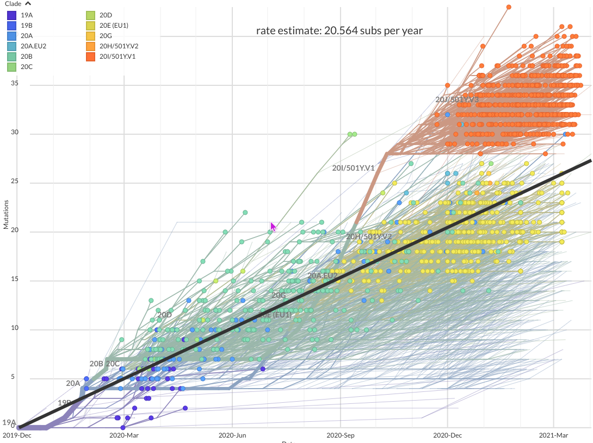

What trees do and do not tell us

Branch support and branch lengths

Circular tree representation

Unrooted tree representation

Can rotate branches


Relationship of the sampled set of sequences

Nextstrain.org
Expected number of substitutions per site (flu)

Trevor Bedford
The “molecular clock” for flu

Trevor Bedford
“Time tree” gives (calendar) dates for all nodes

Trevor Bedford
- Say you can sample SIV from anywhere, and you know that Bioko was connected to the mainland 10,000 years ago. How could that inform your understanding of the divergence of SIV?
What AMAZING fact can you see in the flu phylogenetic time tree?
WTF is going on here? 

Trevor Bedford

Trevor Bedford

Trevor Bedford
Reconstructing state on a tree